네트워크
인터페이스

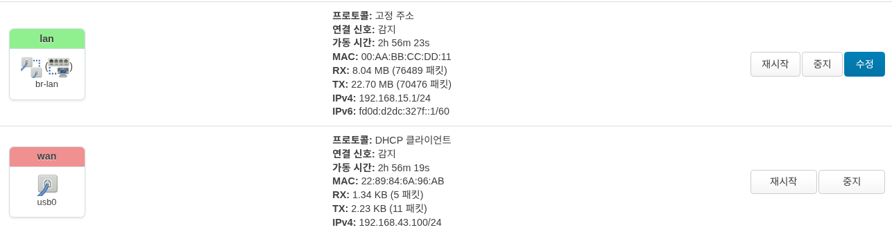
물리적 인터페이스의 현황을 보여줍니다. 간단한 사용량을 볼수 있으며, 수정 버튼을 눌러서 활성화/비활성화, 기본 게이트웨이 주소 변경 및 설정을 할수 있습니다.

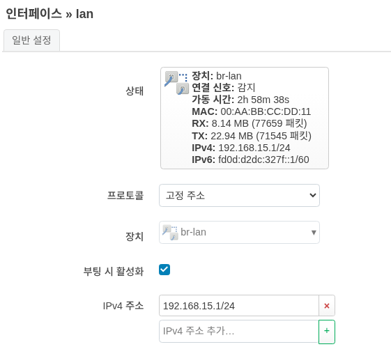
조심
기본 게이트웨이 주소가 올바르지 못하면, UI에 접속이 불가할수 있으며, 공장 초기화(factory reset)을 해야 할수 있습니다.
장치

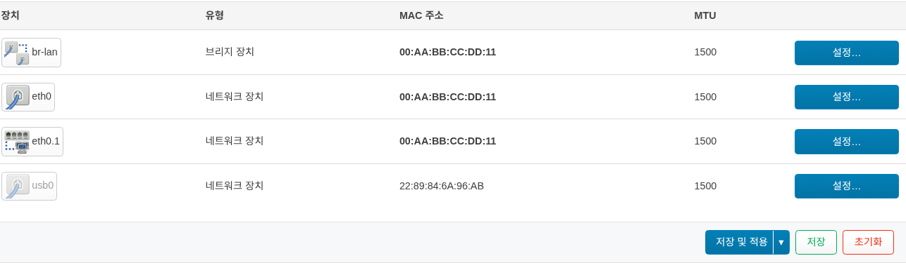
논리적인 인터페이스의 현황을 보여줍니다. 설정 버튼을 눌러서 MTU 값을 수정할 수 있습니다.

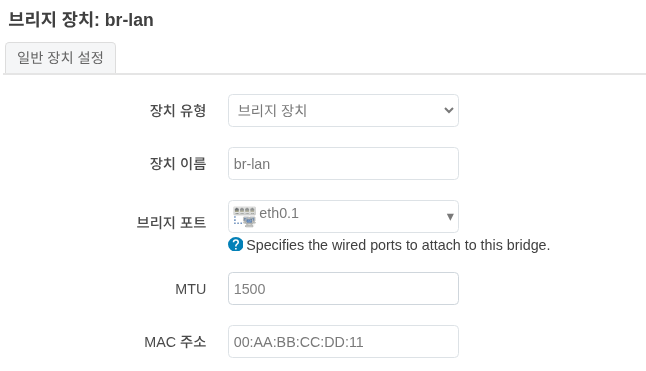
DHCP
현재 접속되어 있거나 접속 되었던 DHCP 호스트 들의 정보를 표시 해줍니다. 설정을 통해서 기본 게이트웨이 주소를 변경할수 있으며, DHCP 범위도 변경이 가능합니다.
할당

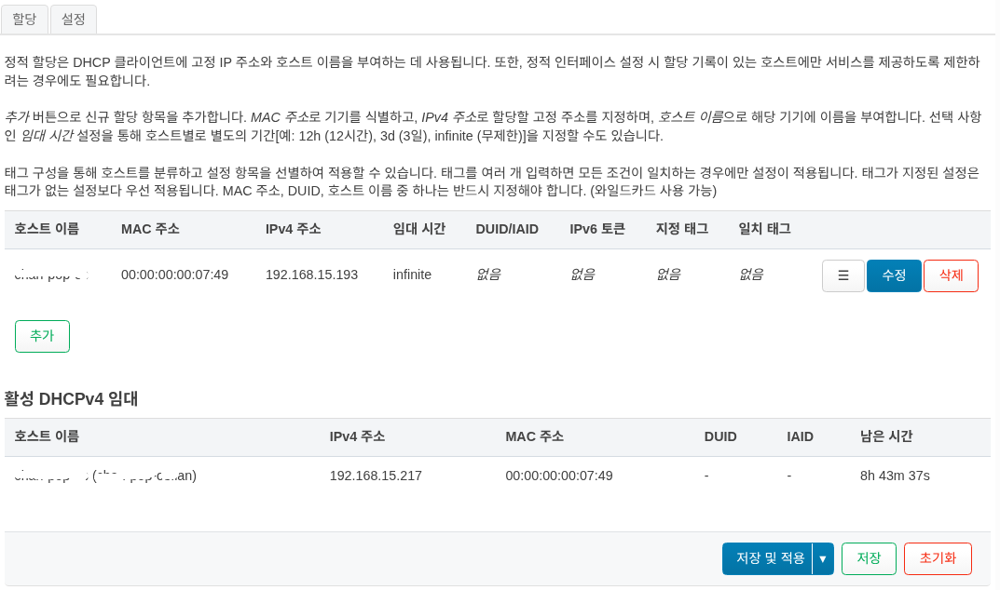
추가 혹은 수정 버튼을 누르면 아래 화면 처럼 DHCP 등록을 할 수 있는 화면이 표시 됩니다.

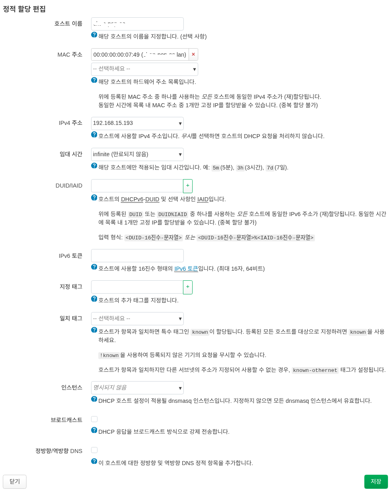
설정
기본 게이트웨이 주소를 변경할수 있으며, DHCP 범위도 변경이 가능합니다.

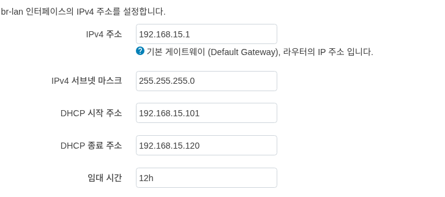
조심
기본 게이트웨이 주소가 올바르지 못하면, UI에 접속이 불가할수 있으며, 공장 초기화(factory reset)을 해야 할수 있습니다.
방화벽
중요
CGNAT(Carrier-Grade NAT) 구간에서의 사용은, 동작에 물리적인 제한이 있습니다. 예) inbound 처리
조심
방화벽 설정이 올바르지 못하면, UI에 접속이 불가할 수 있으며, 공장 초기화(factory reset)을 해야 할수 있습니다.
일반 설정

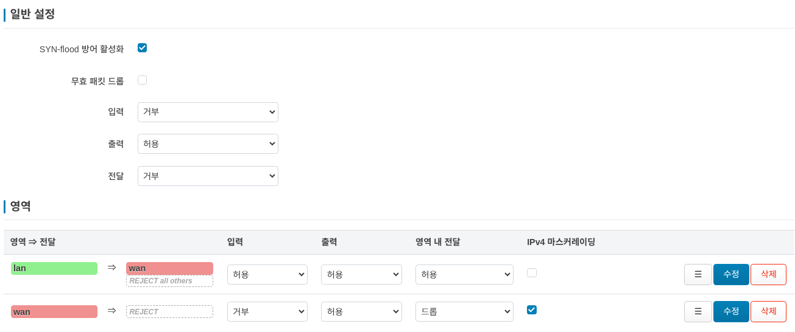
방화벽은 네트워크 인터페이스를 영역(Zone)으로 묶어 네트워크 트래픽 흐름을 제어합니다.
포트 포워딩

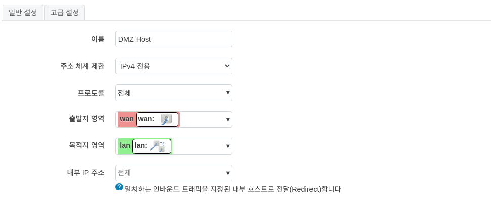
포트 포워딩을 통해 인터넷상의 외부 컴퓨터가 내부 LAN의 특정 컴퓨터나 서비스에 접속할 수 있습니다.
트래픽 규칙

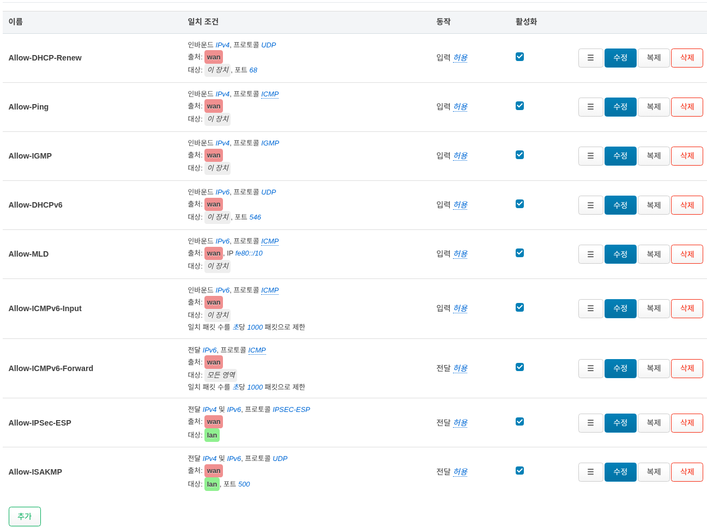
트래픽 규칙은 서로 다른 영역(Zone) 사이를 오가는 패킷에 대한 정책을 정의합니다. 예를 들어 특정 호스트 간의 통신을 차단하거나 라우터의 WAN 포트를 개방할 수 있습니다.
NAT 규칙

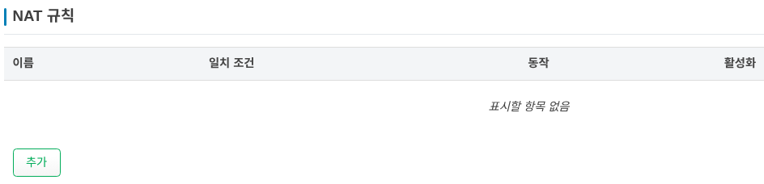
NAT 규칙을 사용하여 외부로 나가거나 전달되는 트래픽의 출발지 IP를 세밀하게 제어할 수 있습니다.
DMZ

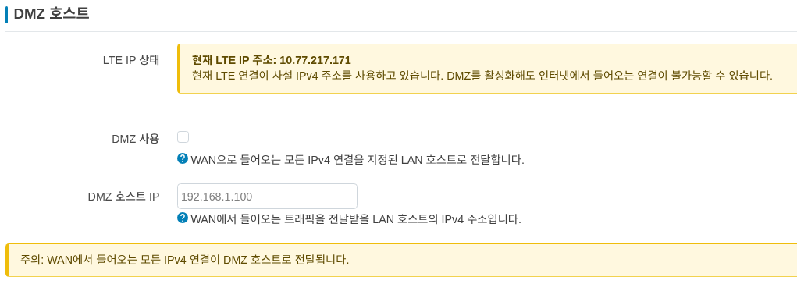
모든 포트를 열고 단일 로컬 장치를 인터넷에 완전히 노출하는 기능 입니다.
CGNAT(Carrier-Grade NAT)구간에서의 사용은, 동작에 제한이 있으며, 만약 WAN ip주소가 해당 대역대로 확인되면 아래와 같은 경고창이 표시 됩니다.
현재 LTE 연결이 사설 IPv4 주소를 사용하고 있습니다. DMZ를 활성화해도 인터넷에서 들어오는 연결이 불가능할 수 있습니다.
DMZ 사용 : 만약 사용을 원하면 해당 내용을 체크 합니다.
DMZ 호스트 IP : 사용을 원하는 디바이스가 있을시에 해당 IP를 설정 합니다.
조심
가능하면 DMZ 대신 표준 포트 포워딩을 사용하여 애플리케이션에 필요한 특정 포트만 여십시오